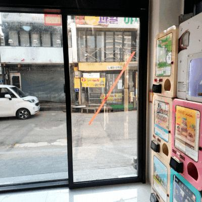

서울 · 경기 · 인천 · 현장 기록 7건
유리 자동문 설치
자동문은 하루에도 수없이 열리고 닫히는 만큼, 고장이 나면 드나드는 사람 모두가 불편해집니다. 사용 환경에 맞는 작동 방식을 고르는 것부터 시작합니다.
센서식이 꼭 정답은 아닙니다
자동 센서 방식은 편리하지만, 잔고장이 생기면 문이 제때 열리지 않아 불편이 큽니다. 성동구 건물 현장은 잔고장 걱정을 줄이기 위해 수동 터치식으로 쓰도록 했습니다.
설치는 이렇게 진행합니다
출입구 위쪽에 상부 레일과 구동부를 수평과 위치를 맞춰 고정하고, 문짝이 흔들리지 않도록 바닥 가이드 위치를 맞춥니다. 양개형은 양쪽 문짝이 가운데에서 정확히 만나도록 조정합니다. 성동구 현장은 2명이 함께 작업했습니다.
비용이 갈리는 지점
- 출입구 크기와 천장 구조
- 프레임 사양 (예: 스텐 알루미늄 프레임)
- 유리 두께와 종류
- 전원 위치와 배선 작업 여부
- 편개형·양개형, 센서식·터치식

양개형 자동문은 꼭 센서로만 열어야 하나요?
아니요, 고를 수 있습니다. 자동 방식은 잔고장이 나면 불편함이 많아, 성동구 현장은 수동 터치식으로 쓰도록 했습니다.
관련 시공사례 보기 →
관련 시공사례 보기 →
자동문 설치는 몇 명이 작업하나요?
현장마다 다르지만, 성동구 현장은 2명이 함께 작업했습니다. 문짝과 상부 구동부를 맞춰 다는 작업이라 2명이 안전하게 진행하는 편입니다.
관련 시공사례 보기 →
관련 시공사례 보기 →
유리 자동문 설치 비용은 어떻게 정해지나요?
출입구 크기와 프레임, 유리 사양에 따라 달라집니다. 천장 구조, 전원 위치와 배선 작업 여부도 영향을 줍니다. 출입구 정면과 천장 쪽 사진을 보내주시면 확인 후 안내해 드려요.
관련 시공사례 보기 →
관련 시공사례 보기 →